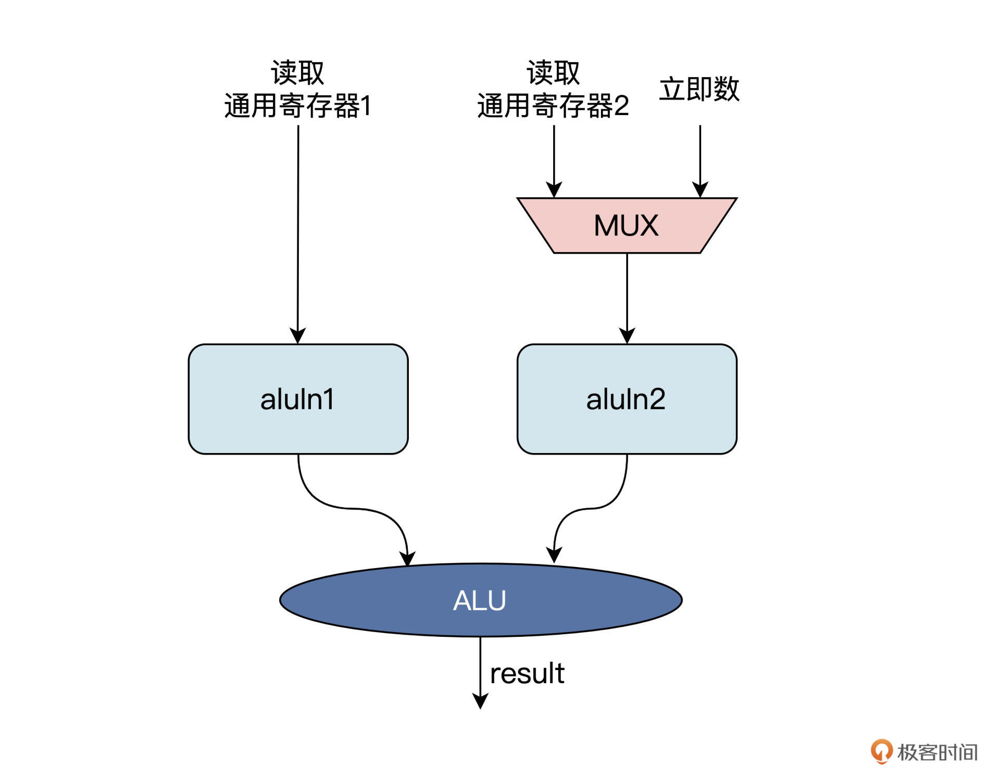

- 00 开篇词 练好基本功，优秀工程师成长第一步.md.html
- 01 CISC & RISC：从何而来，何至于此.md.html
- 02 RISC特性与发展：RISC-V凭什么成为“半导体行业的Linux”？.md.html
- 03 硬件语言筑基（一）：从硬件语言开启手写CPU之旅.md.html
- 04 硬件语言筑基（二）_ 代码是怎么生成具体电路的？.md.html
- 05 指令架构：RISC-V在CPU设计上到底有哪些优势？.md.html
- 06 手写CPU（一）：迷你CPU架构设计与取指令实现.md.html
- 07 手写CPU（二）：如何实现指令译码模块？.md.html
- 08 手写CPU（三）：如何实现指令执行模块？.md.html
- 09 手写CPU（四）：如何实现CPU流水线的访存阶段？.md.html
- 10 手写CPU（五）：CPU流水线的写回模块如何实现？.md.html
- 11 手写CPU（六）：如何让我们的CPU跑起来？.md.html
- 12 QEMU：支持RISC-V的QEMU如何构建？.md.html
- 13 小试牛刀：跑通RISC-V平台的Hello World程序.md.html
- 14 走进C语言：高级语言怎样抽象执行逻辑？.md.html
- 15 C与汇编：揭秘C语言编译器的“搬砖”日常.md.html
- 16 RISC-V指令精讲（一）：算术指令实现与调试.md.html
- 17 RISC-V指令精讲（二）：算术指令实现与调试.md.html
- 18 RISC-V指令精讲（三）：跳转指令实现与调试.md.html
- 19 RISC-V指令精讲（四）：跳转指令实现与调试.md.html
- 20 RISC-V指令精讲（五）：原子指令实现与调试.md.html
- 21 RISC-V指令精讲（六）：加载指令实现与调试.md.html
- 22 RISC-V指令精讲（七）：访存指令实现与调试.md.html
- 23 内存地址空间：程序中地址的三种产生方式.md.html
- 24 虚实结合：虚拟内存和物理内存.md.html
- 25 堆&栈：堆与栈的区别和应用.md.html
- 26 延迟分配：提高内存利用率的三种机制.md.html
- 27 应用内存管理：Linux的应用与内存管理.md.html
- 28 进程调度：应用为什么能并行执行？.md.html
- 29 应用间通信（一）：详解Linux进程IPC.md.html
- 30 应用间通信（二）：详解Linux进程IPC.md.html
- 31 外设通信：IO Cache与IO调度.md.html
- 32 IO管理：Linux如何管理多个外设？.md.html
- 33 lotop与lostat命令：聊聊命令背后的故事与工作原理.md.html
- 34 文件仓库：初识文件与文件系统.md.html
- 35 Linux文件系统（一）：Linux如何存放文件？.md.html
- 36 Linux文件系统（二）：Linux如何存放文件？.md.html
- 37 浏览器原理（一）：浏览器为什么要用多进程模型？.md.html
- 38 浏览器原理（二）：浏览器进程通信与网络渲染详解.md.html
- 39 源码解读：V8 执行 JS 代码的全过程.md.html
- 40 内功心法（一）：内核和后端通用的设计思想有哪些？.md.html
- 41 内功心法（二）：内核和后端通用的设计思想有哪些？.md.html
- 42 性能调优：性能调优工具eBPF和调优方法.md.html
- 先睹为快：迷你CPU项目效果演示.md.html
- 加餐01 云计算基础：自己动手搭建一款IAAS虚拟化平台.md.html
- 加餐02 学习攻略（一）：大数据&云计算，究竟怎么学？.md.html
- 加餐03 学习攻略（二）：大数据&云计算，究竟怎么学？.md.html
- 加餐04 谈谈容器云与和CaaS平台.md.html
- 加餐05 分布式微服务与智能SaaS.md.html
- 国庆策划01 知识挑战赛：检验一下学习成果吧！.md.html
- 国庆策划02 来自课代表的学习锦囊.md.html
- 国庆策划03 揭秘代码优化操作和栈保护机制.md.html
- 温故知新 思考题参考答案（一）.md.html
- 用户故事 我是怎样学习Verilog的？.md.html
- 结束语 心若有所向往，何惧道阻且长.md.html
- 捐赠
08 手写CPU（三）：如何实现指令执行模块？
你好，我是LMOS。
上一节课，我们完成了CPU流水线的指令译码模块设计。我们一起探讨了RISC-V指令是如何翻译的，还学会了提取不同类型指令中的信息。最后根据流水线的需要，我们设计出了译码控制模块和数据通路模块。
接下来，我们利用译码后的这些信息继续设计流水线的下一级——执行单元。指令执行算是CPU流水线中最复杂的一个阶段了，不过别担心，经过前面课程的准备，我们一定可以搞定它。
CPU的执行概述
回顾前面我们已经设计完成的CPU流水线步骤：
- 取指模块根据程序计数器（PC）寻址到指令所在的存储单元，并从中取出指令。-
- 译码模块对取出的指令进行翻译，得到功能码、立即数、寄存器索引等字段，然后根据某些字段读取一个或两个通用寄存器的值。
经过流水线的这两个步骤之后，下一步就需要把这些指令信息发送给执行单元去执行相关操作。根据译码之后的指令信息，我们可以把指令分为三类，分别是算术逻辑指令、分支跳转指令、存储器访问指令。
[上节课]我们已经详细解读了RISC-V指令集的指令格式，正是因为格式上比较简单而且规整，所以不同类别的指令执行过程也是类似的。这样，RISC执行单元的电路结构相比CISC就得到了简化。
所以在指令执行阶段，上述的这三类指令都能通过ALU进行相关操作。比如，存储访问指令用ALU进行地址计算，条件分支跳转指令用ALU进行条件比较，算术逻辑指令用ALU进行逻辑运算。
上图就是ALU模块的设计框图。在ALU模块中，指令可以分成三类来处理：第一类是普通的ALU指令，包括逻辑运算、移位操作等指令；第二类指令负责完成存储器访问指令Load和Store的地址生成工作；第三类是负责分支跳转指令的结果解析和执行。这就是流水线执行阶段的核心模块ALU的设计思路。
执行控制模块的设计
根据上节课设计的译码模块，我们已经得到了指令的功能码、立即数、寄存器索引等字段信息。
你是否还记得？我们在译码模块里根据指令的7位操作码opcode字段，还产生了一个ALU执行的指令控制字段aluCrtlOp。这正是上文提到的ALU模块把指令分成三类执行的控制信号。
具体的信号编码，你可以参考后面的表格：

根据2位执行类型字段aluCrtlOp，以及指令译码得到的操作码funct7和funct3，就可以设计我们的执行控制模块了。
结合前面的表格，我们来看看执行控制模块如何根据aluCrtlOp信号做判断。
如果aluCrtlOp等于（00），对应的指令类型就是Load和Store指令，也就是通过加法运算来计算访存地址；如果aluCrtlOp等于（01），相应的指令类型就是ALUI/ALUR，同样也是根据输入的funct7和funct3字段决定执行哪些算术运算，比如加减运算、移位操作等；如果类型字段等于（10），就对应着分支跳转指令，流水线就会相应去完成条件分支的解析工作。
表格最后一列你先不用关注，扩展功能时才可能用到，这里先关注前三类情况即可。
具体设计的Verilog代码如下：
module ALUCtrl (
input [2:0] funct3,
input [6:0] funct7,
input [1:0] aluCtrlOp,
input itype,
output reg [3:0] aluOp
);
always @(*) begin
case(aluCtrlOp)
2'b00: aluOp <= `ALU_OP_ADD; // Load/Store
2'b01: begin
if(itype & funct3[1:0] != 2'b01)
aluOp <= {1'b0, funct3};
else
aluOp <= {funct7[5], funct3}; // normal ALUI/ALUR
end
2'b10: begin
case(funct3) // bxx
`BEQ_FUNCT3: aluOp <= `ALU_OP_EQ;
`BNE_FUNCT3: aluOp <= `ALU_OP_NEQ;
`BLT_FUNCT3: aluOp <= `ALU_OP_SLT;
`BGE_FUNCT3: aluOp <= `ALU_OP_GE;
`BLTU_FUNCT3: aluOp <= `ALU_OP_SLTU;
`BGEU_FUNCT3: aluOp <= `ALU_OP_GEU;
default: aluOp <= `ALU_OP_XXX;
endcase
end
default: aluOp <= `ALU_OP_XXX;
endcase
end
endmodule
这里要注意的是，当aluCtrlOp等于（01）时，需要根据funct3和funct7产生ALU的操作码。在前面的译码模块中，已经为我们提供了I型指令类型的判断信号itype。如果是itype信号等于“1”，操作码直接由funct3和高位补“0”组成；如果不是I型指令，ALU操作码则要由funct3和funct7的第五位组成。
根据上述的三类指令，就会产生一个4位的ALU操作信号aluOp，为后面的ALU模块做相关逻辑运行提供操作码。
通用寄存器
在ALU模块开始执行运算之前，我们还需要提前完成一个操作——读取通用寄存器。在参与ALU逻辑运算的两个操作数中，至少有一个来自于通用寄存器，另一个可以来自于通用寄存器或者指令自带的立即数，如下图所示：


由于第七节课提到的6种指令中的R型指令有三个操作数，分别对应于两个源寄存器rs1和rs2，以及一个目标寄存器rd。一条R指令类似于有三个参数的函数，如add（rd，rs1，rs2），完成的功能就是先读取rs1、rs2两个参数，然后相加，最后把结果写入到rd参数中。
对应到每条指令，则需要从通用寄存器模块中读取其中两个寄存器中的数据，之后还要把运算结果写入另一个通用寄存器。每读取一个寄存器，就需要输入一个寄存器索引，并输出一个通用寄存器中的值。两个操作数对应的寄存器需要同时读取，所以通用寄存器模块需要两个读地址接口和两个读数据输出接口。
此外，处于流水线上的指令是并发执行的，在读取通用寄存器的同时，可能还需要写入数据到通用寄存器，所以需要一套写地址和写数据接口。因此，通用寄存器模块的设计框图如下：

根据上述的设计思路，我们就可以设计和实现通用寄存器代码了。
module gen_regs (
input clk,
input reset,
input wen,
input [4:0] regRAddr1, regRAddr2, regWAddr,
input [31:0] regWData,
output [31:0] regRData1,
output [31:0] regRData2
);
integer ii;
reg [31:0] regs[31:0];
// write registers
always @(posedge clk or posedge reset) begin
if(reset) begin
for(ii=0; ii<32; ii=ii+1)
regs[ii] <= 32'b0;
end
else if(wen & (|regWAddr))
regs[regWAddr] <= regWData;
end
// read registers
assign regRData1 = wen & (regWAddr == regRAddr1) ? regWData
: ((regRAddr1 != 5'b0) ? regs[regRAddr1] : 32'b0);
assign regRData2 = wen & (regWAddr == regRAddr2) ? regWData
: ((regRAddr2 != 5'b0) ? regs[regRAddr2] : 32'b0);
endmodule
这里添加了一个写控制使能信号wen。因为写寄存器是边沿触发的，在一个时钟周期内写入的寄存器数据，需要在下一个时钟周期才能把写入的数据读取出来。为了提高读写效率，在对同一个寄存器进行读写时，如果写使能wen有效，就直接把写入寄存器的数据送给读数据接口，这样就可以在一个时钟周期内，读出当前要写入的寄存器数据了。- 从前面的章节中我们知道，通用寄存器总共有32个，所以通用寄存器模块上的读写地址都是5位（\(2^{5}\)=32）。
其中，还有一个寄存器比较特殊，从代码中也可以看到它的特殊处理，即读地址regRAddr1 = 5’b0 时的寄存器。我们把第一个寄存器叫做0值寄存器，因为在RISC-V指令架构中就规定好了，第一个通用寄存器必须编码为0，也就是把写入该寄存器的数据忽略，而在读取时永远输出为0。
ALU模块设计
当操作码和操作数都准备好后，我们就可以开始ALU模块的实现了。
上述执行控制模块根据三类指令产生的ALU操作信号aluOp，在ALU模块就能以此为依据，执行相应的运算了。操作码对应的ALU操作如下表所示：

根据表格中的操作编码和对应的运行操作，很容易就可以设计出ALU模块，具体的设计代码如下：
module alu (
input [31:0] alu_data1_i,
input [31:0] alu_data2_i,
input [ 3:0] alu_op_i,
output [31:0] alu_result_o
);
reg [31:0] result;
wire [31:0] sum = alu_data1_i + ((alu_op_i[3] | alu_op_i[1]) ? -alu_data2_i : alu_data2_i);
wire neq = |sum;
wire cmp = (alu_data1_i[31] == alu_data2_i[31]) ? sum[31]
: alu_op_i[0] ? alu_data2_i[31] : alu_data1_i[31];
wire [ 4:0] shamt = alu_data2_i[4:0];
wire [31:0] shin = alu_op_i[2] ? alu_data1_i : reverse(alu_data1_i);
wire [32:0] shift = {alu_op_i[3] & shin[31], shin};
wire [32:0] shiftt = ($signed(shift) >>> shamt);
wire [31:0] shiftr = shiftt[31:0];
wire [31:0] shiftl = reverse(shiftr);
always @(*) begin
case(alu_op_i)
`ALU_OP_ADD: result <= sum;
`ALU_OP_SUB: result <= sum;
`ALU_OP_SLL: result <= shiftl;
`ALU_OP_SLT: result <= cmp;
`ALU_OP_SLTU: result <= cmp;
`ALU_OP_XOR: result <= (alu_data1_i ^ alu_data2_i);
`ALU_OP_SRL: result <= shiftr;
`ALU_OP_SRA: result <= shiftr;
`ALU_OP_OR: result <= (alu_data1_i | alu_data2_i);
`ALU_OP_AND: result <= (alu_data1_i & alu_data2_i);
`ALU_OP_EQ: result <= {31'b0, ~neq};
`ALU_OP_NEQ: result <= {31'b0, neq};
`ALU_OP_GE: result <= {31'b0, ~cmp};
`ALU_OP_GEU: result <= {31'b0, ~cmp};
default: begin
result <= 32'b0;
end
endcase
end
function [31:0] reverse;
input [31:0] in;
integer i;
for(i=0; i<32; i=i+1) begin
reverse[i] = in[31-i];
end
endfunction
assign alu_result_o = result;
endmodule
在上面的ALU模块代码中，输入信号aluIn1和aluIn2分别是源操作数1和源操作数2，信号aluOp是执行控制模块产生的ALU运算控制码。ALU的功能就是根据运算码aluOp来完成两个源操作数的逻辑运算，并把结果通过信号aluOut输出。
ALU模块的总体代码比较简单，但里面这段代码（第16行～第19行）不好理解，别担心，我这里专门拿出来给你讲一下。
wire [31:0] sum = aluIn1 + ((aluOp[3] | aluOp[1]) ? -aluIn2 : aluIn2);
wire neq = |sum;
wire cmp = (aluIn1[31] == aluIn2[31]) ? sum[31]
: aluOp[0] ? aluIn2[31] : aluIn1[31];
首先，代码中的sum信号其实就是两个源操作数的和，不过当运算码aluOp的第3位和第1位为“1”时做的是相减运算，这是为减法指令或者后面的比较大小而准备的运算。你可以对照上面的ALU运算表格来理解。
neq信号表示的是比较两个操作数是否相等，这就是根据前面的两个操作相减的结果判断，如果它们的差不为“0”，也就是sum信号按位与之后不为“0”，则表示两个操作数不相等。
cmp信号表示两个操作数的大小比较，如果它们的最高位（也就是符号位）相等，则根据两个操作数相减的差值的符号位（也是数值的最高位）判断。如果是正数，表示源操作数1大于源操作数2，否则表示源操作数1小于源操作数2。
如果它们的最高位不相等，则根据ALU运算控制码aluOp的最低位判断。如果aluOp最低位为“1”，表示是无符号数比较，直接取操作数2的最高位作为比较结果。如果aluOp最低位为“0”，表示是有符号数比较，直接取操作数1的最高位作为比较结果。
下面我们再来看看移位操作相关的代码，其中的shamt信号是取自源操作数2的低五位，表示源操作数1需要移多少位（25=32）。shin信号是取出要移位的数值，根据aluOp判断是左移还是右移，如果是右移就直接等于源操作数1，如果是左移就先对源操作数的各位数做镜像处理。
shift信号是根据aluOp判断是算术右移还是逻辑右移，如果是算术右移，则在最高位补一个符号位。shiftt信号是右移之后的结果，这里用到了\(signed()函数对移位前的数据shift进行了修饰，\)signed()的作用是决定如何对操作数扩位这个问题。
具体的过程是，在右移操作前，$signed()函数先把操作数的符号位，扩位成跟结果相同的位宽，然后再进行移位操作，而shiftr就是右移后的结果。
我们再专门看看ALU模块代码的第20行到第25行，这部分主要用来完成移位操作。
wire [ 4:0] shamt = aluIn2[4:0];
wire [31:0] shin = aluOp[2] ? aluIn1 : reverse(aluIn1);
wire [32:0] shift = {aluOp[3] & shin[31], shin};
wire [32:0] shiftt = ($signed(shift) >>> shamt);
wire [31:0] shiftr = shiftt[31:0];
wire [31:0] shiftl = reverse(shiftr);
请你注意，左移的结果shiftl，是由右移后的结果进行位置取反得到的。因为对于需要左移的操作数，在前面已经做了位置取反，所以移位操作时也是进行右移处理，最后把结果再一次做位置取反就可以了。- 好了，恭喜你走到这里，CPU流水线中执行阶段的内容就告一段落了。下一节课我们继续完成流水线的访存模块的设计。
重点回顾
这节课告一段落，我来给你做个总结。
指令执行算是CPU流水线中最复杂的一个阶段了，需要我们慢慢推导，细细思考，才能理清楚里面的逻辑关系。这节课的内容和前面的第五节课到第七节课的知识关联比较多，不懂的地方你可以再回去看看。
下面我们一起来回顾一下今天的重点内容。为了实现CPU的指令执行模块，我们先梳理了设计思路。我们把指令分成逻辑运算、存储器访问、条件分支判断这三类指令进行处理。这三类指令经过ALU执行相关操作之后，统一由数据通路来输出结果。
接着我们设计了执行控制模块。根据译码模块里产生的指令控制字段aluCrtlOp，执行控制模块可以根据上述的三类指令，相应产生一个4位的ALU操作信号aluOp，为后面的ALU模块提供运算执行码。
根据指令在流水线中执行时对通用寄存器的读写特点，我们为32个通用寄存器组设计了由两个套读接口和一套写接口组成的通用寄存器模块，这三套接口可以支持其他模块对通用寄存器进行同时读写。
最后，根据执行控制模块产生的ALU运算控制信号aluOp，我们设计出了ALU模块。在ALU模块中，可以完成加减法计算，两个操作数的大小比较，操作数的左移右移等操作。

如果你有兴趣的话，可以参考前面RISC-V指令架构里列出的指令，自己试试实现更多的指令操作。下节课，我们继续探索访存相关模块如何设计和实现，敬请期待。
思考题
在ALU模块代码中，为什么要把左移操作转换为右移进行处理？
欢迎你在留言区跟我交流讨论，积极参与思考有助于你深化理解。如果觉得这节课还不错，别忘了分享给身边的朋友，邀他跟你一起手写CPU！
© 2019 - 2023 Liangliang Lee. Powered by gin and hexo-theme-book.